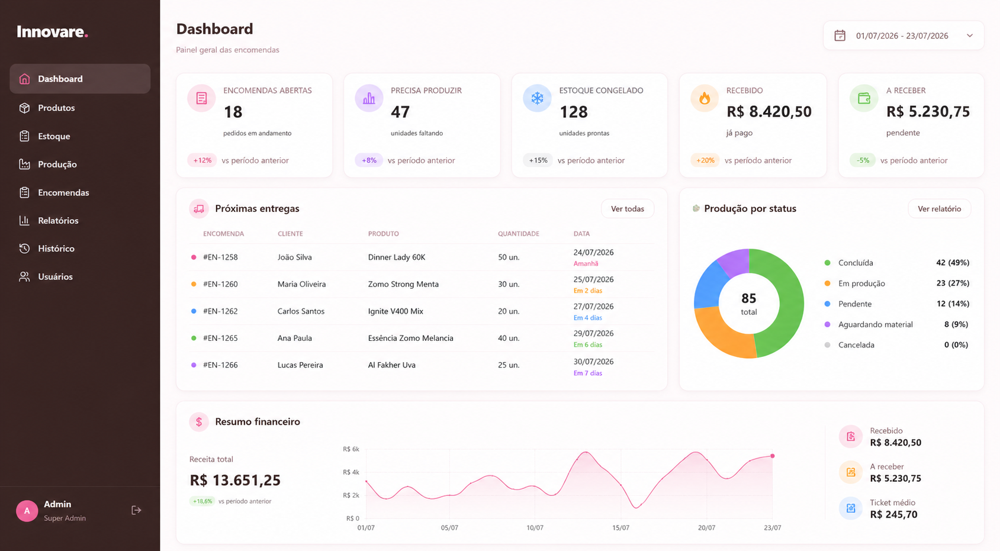
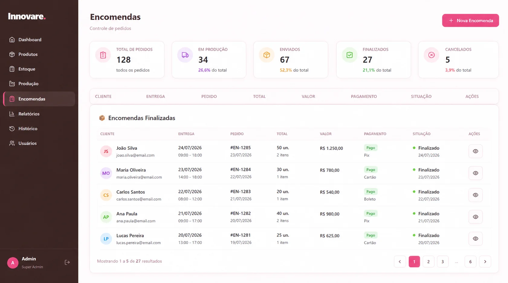
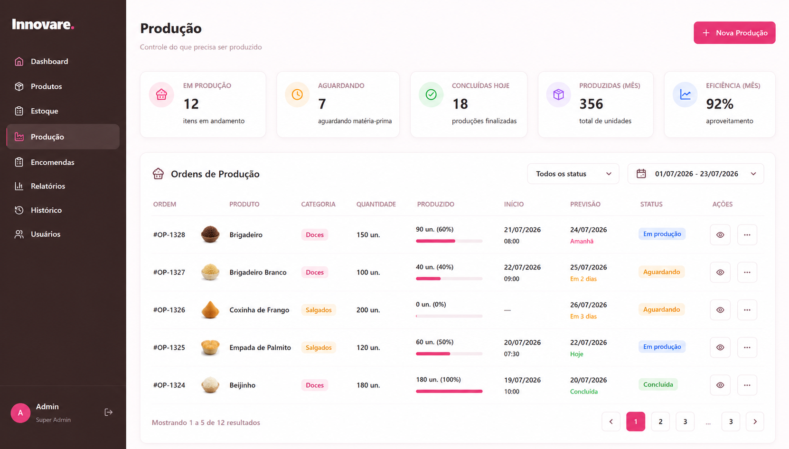
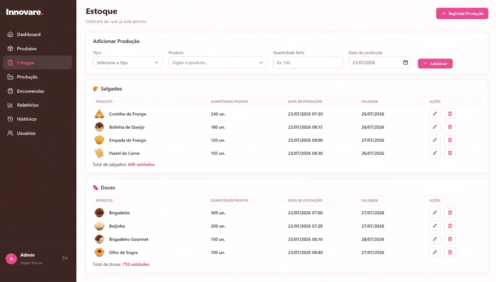
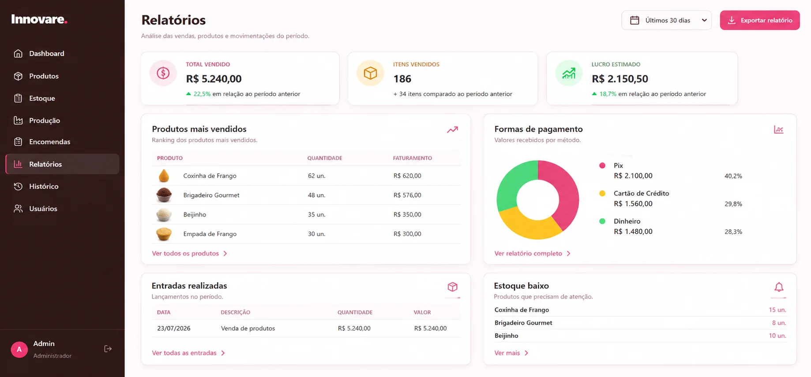
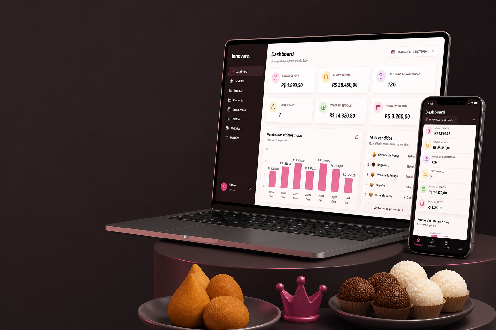

Agenda de produção
Organize encomendas, quantidades, datas e prioridades.
INNOVARE
Uma solução para confeitarias e salgaderias controlarem encomendas, produção, insumos, estoque e vendas sem perder o ritmo da operação.

Encomendas organizadasProdução visívelOrganização para uma rotina com produção própria, encomendas e prazos.
ROTINA SOB CONTROLE
O Innovare transforma pedidos e encomendas em uma visão prática das tarefas, insumos e resultados da operação.
Organize encomendas, quantidades, datas e prioridades.
Acompanhe materiais disponíveis e necessidades de reposição.
Entenda vendas, movimentações e desempenho do negócio.
DEMONSTRAÇÃO VISUAL
Telas reais do Innovare para acompanhar cada etapa da operação.




Datas, clientes, itens e situação de cada pedido.
Organização do que precisa ser produzido.
Insumos, produtos e movimentações.
Necessidades e reposições da operação.
Registro e histórico comercial.
Indicadores importantes em uma visão simples.
Entendemos produtos, etapas e prazos.
Adaptamos cadastros e fluxos.
Testamos com a rotina real.
Ajustamos conforme a evolução.

CONHEÇA O INNOVARE
Solicite uma demonstração e conte como funciona a rotina do seu negócio.
Agendar demonstração